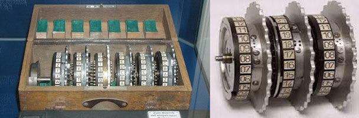

La macchina Enigma era un dispositivo meccanico complesso, sviluppato originariamente negli anni '20 dalla società tedesca Siemens e Halske.
Era in grado di cifrare e decifrare messaggi utilizzando rotori intercambiabili, che cambiavano la sostituzione delle lettere ogni volta che una lettera veniva digitata;

consisteva quindi nell'inviare messaggi criptati alterati nella forma ma non nel contenuto.
Questo ha reso la crittografia Enigma estremamente difficile da decifrare, poiché ogni messaggio poteva essere cifrato in milioni di modi diversi.